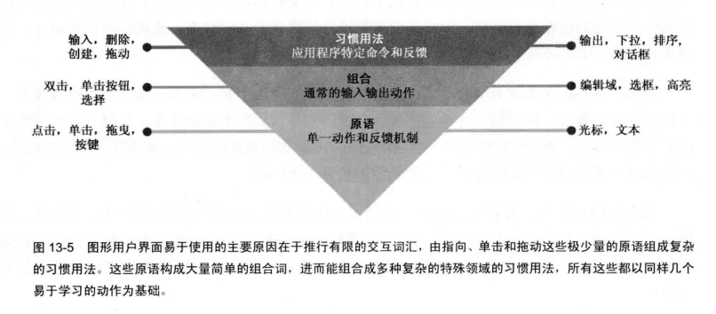

隐喻、习惯用法及能供性
隐喻范式界面
隐喻范式界面依赖于用户用在真实世界的实际经验在界面上建立视觉与功能之间的联系。
隐喻要假设人们能够理解事物，可以小至工具栏按钮上的小图标，大到某些程序的整个屏幕：比如一对剪刀表示“剪切”
直觉、本能与学习
直觉通过推理起作用。我们理解界面隐喻元素的含义，因为心理上把它们与我们之前学习过的东西联系起来。
本能是内在反应，不需要有意识地进行思考。
隐喻界面有效利用人脑强大的推理能力，但因为这种方法依赖于用户的特殊思维，所以人们可能因为没有建立这种联系所需的语言、学习经历或者推理能力而失效。
习惯用法范式界面
设计习惯用法基于我们学习并使用习惯用法的方式，并不关注技术或直觉，而是通过学习简单、非隐喻的视觉或行为习惯用法来完成目标和任务。
一般称为“设计规范”，由有影响力的大公司所制定，能否成为规范取决于设备或软件的受众
图形界面大都是习惯用法范式
好的习惯用法只需学习一次
创建好的习惯用法，所有易学的交流系统都遵循以下模式： 
手动能供性
手动能供性指我们认为对象能做什么，而不是它实际上能做什么。
能供性的实现预期：要确保你的程序兑现它手动能供性所表现的期望。
直接操作与顺从
“直接操作”是一种界面设计策略，由三部分组成：
- 应用所涉及数据对象的视觉呈现
- 在对象上执行的视觉和手势机制
- 这些动作的即刻可视结果
丰富的视觉反馈是成功的直接操作的关键。
创造容易记忆、恰当有丰富的顺从反馈的习惯用法会提高用户的工作效率，允许用户专注于应用的内融合功能，不要陷入机械时代的隐喻和交互的桎梏。